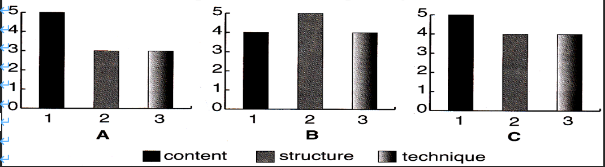

Complete the table below.
Write NO MORE THAN THREE WORDS AND/OR A NUMBER for each answer.
| Accommodation | Price (dormitory) | Comments |
|---|---|---|
| Traveller’s Lodge | Example fully booked |
|
| Bingley’s | 1 USS | • in town centre • café with regular 2 nights • sundeck |
| Chalet Lodge | US$ 18.00 | • located in a 3
alpine settings • 10 mins from town centre - 4 are welcome |
| Globetrotters | US$ 18.50 | • in town centre • 5 included • chance to win a 6 |
Who wants to do each of the activities below?
Write the correct letter A, B or C, next to Questions 7-10.
Choose the correct letter A, B or C
Jack says that in London these days, many people
If people want to cycle to school or work, CitiCyclist helps them by
Jack works some advanced cyclists who want to develop
CitiCyclist supports the view that cyclists should
List THREE types of organisations for which CitiCyclist provides services.
Write NO MORE THAN THREE WORDS for each answer.
15
16
17
Complete the notes below.
Write NO MORE THAN THREE WORDS AND/OR A NUMBER for each answer,
| website address: |
|
| phone: | |
| cost (single person): | per lesson |
| usual length of course: | (except complete beginners) |
Answer the questions below.
Write NO MORE THAN THREE WORDS for each answer.
21 What do Sharon and Xiao Li agree was the strongest aspect of their presentation?
22 Which part of their presentation was Xiao Li least happy with?
23 Which section does Sharon feel they should have discussed in more depth?
Choose the correct letter A, B or C.
Sharon and Xiao Li were surprised when the class said
The class gave Sharon and Xiao Li conflicting feedback on their
The class thought that the presentation was different from the others because
Which bar chart represents the marks given by the
tutor?

Complete the sentences below.
Write ONE WORD ONLY for each answer.
28 The tutor says that the of the presentation seemed rather sudden.
29 The tutor praises the students’ discussion of the of their results.
30 The tutor suggests that they could extend the review in their report.
Complete the notes below.
Write NO MORE THAN THREE WORDS for each answer.
The World Health Organisation says a healthy city must
Complete the table below.
Write NO MORE THAN THREE WORDS for each answer.
| Place/Project | Aim | Method | Achievement |
|---|---|---|---|
| Sri Lanka Community Contracts System |
to upgrade squatter settlements | the 34 constructed infrastructure, e.g. drains, paths | • better housing and infrastructure • provided better 35 opportunities |
| Mali cooperative |
to improve sanitation in city | • 36
graduates organizing garbage collection • Public education campaign via 37 and discussion groups |
• greater environmental awareness • improved living conditions |
| Egypt (Mokattam) 38 |
to support disadvantaged women | women provided with the 39 and equipment for sewing and weaving | • rise in the 40 and quality of life of young women |